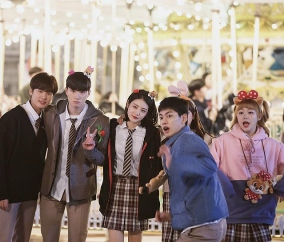

1일차


◆ 오전: 남산서울타워 (전망대 관람)

서울의 대표 야경 명소로, 전망대에서 서울 전역을 한눈에 볼 수 있어요
케이블카 또는 남산순환버스를 이용해 이동하며 도심 전경을 감상하는 것도 추천해요!
📍 https://www.seoultower.co.kr/
◆ 점심: 명동 거리 쇼핑 & 맛집 탐방
남산에서 도보 또는 버스/택시로 명동 이동해요.(약 10분)
패션거리 쇼핑 후 명동교자, 명동만두 등 길거리 음식을 즐겨보세요.
◆ 오후: 청계천 산책 (서울 도심 속 빛의 길)

명동에서 대중교통을 타고 청계천으로 이동해요.
청계광장~광교 구간은 조명과 미디어 아트가 설치되어 저녁 시간대에 가장 아름다워요!

◆ 저녁: 을지로 네온거리 & 야시장 탐방

청계천에서 도보로도 이동 가능해요.(약 5분)
을지로3가 일대 네온사인 거리에서 서울의 밤 감성을 만끽해보세요.
야외 테이블이 있는 포장마차 골목에서 저녁겸 맥주 한잔하며 첫째날을 마무리해봐요.
📍 원조만선호프 : 서울특별시 중구 충무로9길 14
2일차

◆ 오전: 여의도 한강공원 피크닉

여의도 한강공원에서 돗자리 펴고 여유로운 시간을 보내요
킥보드나 서울시 공유 자전거 (따릉이)를 타고 라이딩을 즐기는 것도 추천해요!
◆ 점심: 한강 피크닉 점심 (배달음식 / 라면)
배달 인기 메뉴: 교촌치킨, 맘스터치, 피자헛, 배달국밥 등
한강공원 내 ‘CU 한강라면 존’에서 즉석 조리 가능해요.
근처 편의점에서 한강라면을 끓여 먹거나, 배달앱으로 치킨·피자·분식 등 주문 가능해요!
📍 배달존 위치 : 여의나루역 3번출구 인근
◆ 오후: 유람선 탑승 (여의도 선착장 → 반포대교)
여의도 선착장에서 출발하는 유람선 탑승해요(약 70분 코스).
다리 아래를 지나며 서울의 스카이라인과 반짝이는 강빛을 감상할 수 있어요.
해 질 무렵(18~19시) 탑승 시 가장 아름다운 색감을 볼 수 있어요.
◆ 저녁: 반포 한강공원 이동 & 맛집 탐방

유람선 하선 후, 반포 한강공원으로 이동해요.
한강변에 위치한 레스토랑에서 저녁 식사를 추천해요.
📍 리버서울 : 서울특별시 서초구 한강남자전거길 2351 1층
◆ 밤: 반포대교 달빛분수쇼 감상

20시, 21시 정각 분수 공연 — 조명과 물줄기의 조화로 서울 야경 대표 명소에요.
분수 뒤로 보이는 빌딩 불빛과 강 반사 장면이 특히 인상적이에요. 불빛에 맞춰 음악도 함께 나와요!
3일차


◆ 오전: 송리단길 감성 브런치 카페 & 석촌호수 나들이
롯데월드몰 뒷편 송리단길에서 여유로운 아침을 시작해요.
인기 브런치 카페 또는 분위기 좋은 루프탑 카페 방문을 추천해요.
📍 대디스 테이블 송리단길 본점 : 서울특별시 송파구 백제고분로45길 5-12
📍 씨엘트리 : 서울특별시 송파구 백제고분로45길 17-3
◆ 점심: 교복 대여 후 롯데월드

송리단길 인근 교복대여점에서 교복을 대여한 뒤 롯데월드 입장해요.
교복 입고 롯데월드에서 사진을 찍으면 레트로 감성 가득한 추억 남기기 좋아요.
📍 교복대여 : 감성 교복 롯데월드점 / 잠실본점
◆ 오후: 롯데월드 놀이공원 즐기기

석촌호수 산책 후 롯데월드 자유이용권으로 입장해요.
실내·야외 테마파크에서 서울의 도심 속 즐길거리 체험해요.
사진 명소: 매직아일랜드 다리 위 / 롯데월드 캐슬 앞 조명 구간
◆ 저녁: 방이동 먹자골목에서 저녁식사

롯데월드 도보 10분 거리의 서울 대표 먹자골목이에요.
📍 태양곱창 잠실본점
◆ 밤: 롯데월드타워 서울스카이 전망대

식사 후 롯데월드타워로 이동(도보 5분).
전망대에서 서울 전역의 야경 감상 — 한강·남산·도심 빛이 한눈에 들어오는 뷰에요.
매직아워 시간(19:00~20:00)에 방문하면 붉은 노을과 야경이 겹치는 최고의 타이밍이에요.
hnssomkim : 남산 케이블카 진짜 예뻤어요!
alwaysyourdain : 을지로 야장 분위기 최고 👍
ym__vely : 야경이 너무 아름다웠어요
ur_my.god_____ : 남자친구도 너무 좋아했던 코스였어요 ❤️